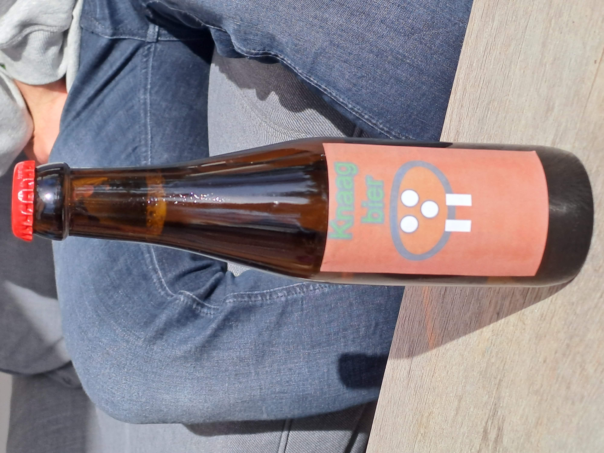

Welkom bij Ricardos mindsettips
Op deze website vind je tips om je mindset te verbeteren.
Deze tips zijn gebaseerd op mijn eigen ervaringen.
Ik hoop dat je er wat aan hebt!
Veel plezier!
'
De schokkende waarheid over Meta
Meta was begonnen met Face Mesh. Dat was een website waar je vrouwelijke studenten kan vergelijken op aantrekkelijkheid. Dat vonden de vrouwelijke studenten niet leuk.
In 2003 waren er geen universele online Facebooks op Harvard, alleen papieren bladen die werden uitgedeeld en privé online gidsen. Zuckerberg vertelde de Crimson dat "iedereen veel praat over een universeel Facebook binnen Harvard". Ik vind het een beetje dom dat de universiteit er een paar jaar over doet. Ik kan het beter dan zij, en ik kan het in een week."
Dus staken hij en zijn vriend Eduardo Saverin allebei $1000 in het project.
6 dagen na de lancering van Facebook werd hij door een aantal studenten beschuldigd van misleiding. Hij zei dat hij met hen zou samenwerken aan Harvard Connection. Dus begonnen ze een rechtszaak die later werd geschikt.
Wat je hieruit kan halen is dat Mark zich niet aan afspraken houdt en reputatie en geld belangrijker vindt dan mensen. Anders had hij het beter opgelost met zijn vriend denk ik.
De klokkenluider van Facebook zei: “"Het bedrijf kiest altijd voor eigen belang en geld, niet voor wat goed is voor publiek’.
Daar kan ik me in vinden. Zo zag je bij Instagram eerst voor een groot gedeelte alleen de mensen die je volgt. TikTok liet veel onbekende video's zien. Omdat Tiktok erg groeide besloot Instagram dit over te nemen. Ik vind dit een slechte beslissing omdat je dan eerder te maken krijgt met ongepaste content.
Veel fans van Instagram hadden ook kritiek op deze wijziging, maar meta boeide het vrij weinig en wilde er mee doorgaan. 2 dagen nadat ze dat zeiden besloten ze toch om het terug te draaien. 1 positief ding over Meta vind ik dat ze Pornhub hebben verwijderd van Instagram.
Verder heeft Meta ook Whatsapp overgenomen. Ze beloofden geen advertenties te tonen en geen data te verzamelen. Daar hebben ze zich niet aan gehouden.
Daardoor nam een oude mede eigenaar van Whatsapp ontslag en richtte Signal op.
Verder hoor ik ook van bronnen dat Facebook geen gegevens wil geven over mensen met verkeerde bedoelingen vanwege privacy.
Ben je het met me eens dat Facebook een slecht bedrijf is. Dan kan je het volgende doen. Whatsapp vervangen voor Discord. Signal is zo beveiligd dat de politie niet kan meekijken. Daardoor komen er snel mensen met verkeerde bedoelingen op. Verder hebben Whatsapp en Signal automatische bericht verwijdering. Dat maakt het de politie ook moeilijker. Discord is niet beveiligd qua berichten. Mensen kunnen ze niet zomaar onderscheppen, maar de politie en de geheime dienst wel waardoor criminelen het minder snel zullen gebruiken denk ik.
Verder raad ik aan om bij DPG media of de Ster te adverteren en niet op Facebook. De tarieven van Ster online vindt u hier. Via DPG direct kan je voor €1 per dag adverteren.
Dus kort samengevat zou ik zo min mogelijk van Meta gebruiken omdat ik het niet veilig vind. Ik zou op zoek gaan naar alternatieven.
Zelf heb ik Facebook en Instagram verwijderd. Whatsapp niet, maar daar maken ze verlies op.
De waarheid over Odesee
Odesee is een platform waar je met weinig regels video’s kan toevoegen. Je hebt geen advertenties. Ze werken met een eigen cryptomunt. Toch heeft het platform ook duidelijk nadelen.
Nick van Thelinuxexperiment heeft zich erover uitgesproken.
Hij heeft gezegd dat er beter gehandhaafd zou moeten worden. Hij zei ook dat hij onder video’s komt te staan waar Hitler geprezen wordt en daar niet mee gelinkt wil worden. Verder staan er ook racistische video’s op waar hij ook niet gelinkt mee wil worden. Toen hij dit plaatste op Odesee kreeg hij veel haat over zich heen.
Dat vind ik heftig en raad aan er niet op te gaan.
Ik begrijp dat volledig. Zelf ben ik van Tiktok afgegaan omdat ik veel grappen over pedofilie tegenkwam en ik 9 jarige fans heb. Ik ben bang dat zij daar verkeerde ideeën van krijgen. Stel je voor iemand van 9 denkt: leuk knagen zij aan zij te luisteren en komt daarna zo’n grap tegen. Dat heeft heftige gevolgen voor zo’n persoon.
We hebben allebei een andere reden, maar wat we gemeen hebben is dat we niet op een platform willen met die content.
Dan vraag je je misschien af: zijn er alternatieven die strengere regels hebben. Ja die heb je. De alternatieven die ik aanraad zijn:
-
Spotify Podcast. Alleen audio.
-
Youtube: heeft heftige content maar minder heftig dan op Odesee en Tiktok.
-
WordPress.
Dus kort samengevat zou ik niet op Odesee gaan, maar een alternatief zoeken.
Mijn mening over flitsmeister

Je kent het vast wel. Flitsmeister. De app die bijhoudt waar er flitsers zijn. Flitsmeister was volgens mij de eerste app die dat deed. Nu doen Tomtom met Amigo en Google Maps het ook. Klinkt als een goede app zou je denken. Maar ik denk daar toch anders over.
In Duitsland komen 4,2 mensen om per 1 miljard gereden KM. In Nederland zijn dit er 4,7. Dat is afgerond 11% meer (0,5/4,7*100). Bron: Topgear. Dat lijkt weinig, maar NL heeft in 2021 104,5 miljard km gereden. Bron CBS. Dat betekent dat er in Nederland 52,25 mensen meer omkomen dan in Duitsland door autoongelukken. Ik reken met kilometers omdat er vaak meerdere mensen in een auto zitten en niet iedereen autorijdt.
In Noorwegen (3,0) gebeuren de minste ongelukken. Dat komt omdat daar weinig mensen wonen en je moeilijk de maximum snelheid kan overtreden omdat daar meer bergwegen zijn.
Dan denk je nu misschien: wat heeft dit te maken met Flitsmeister. In Duitsland houden veel meer mensen zich aan de maximum snelheid dan in Nederland. In Noorwegen zijn dit er nog veel meer omdat het erg moeilijk is om die te overtreden.
In Nederland denken mensen: “ik zet flitsmeister aan, kan ik niet geflitst worden”. Wat voor gevaarlijke situaties kan zorgen. In Duitsland is het drukker op de weg, maar daar gebeuren toch minder ongelukken.
Dat komt denk ik omdat minder mensen flitsmeister gebruiken om flitsers te vermijden, maar zich netjes aan de maximum snelheid houden.
Dan denk je misschien: ik heb vaak haast en weinig tijd.
Veel mensen die zeggen weinig tijd te hebben zitten lang op social media, streamingsdiensten en TV. Ik hoor soms van influencers dat het eerste wat mensen pakken hun telefoon is als ze wakker worden. Vervolgens kijken ze op Social Media.
Dan denk ik: “je had die tijd ook kunnen gebruiken om eerder weg te gaan zodat je je aan de maximum snelheid kan houden”.
Dus kort samengevat ben ik geen fan van flitsmeister, maar vind ik dat mensen zich aan de maximum snelheid moeten houden.
Wat kan je leren van Kung Fu Panda 1 en 3

Wat kan je leren van Kung Fu Panda 1 en 3 deel Let op hier zitten spoilers in van de Kung Fu Panda films.
Kung Fu Panda 1,2 en 3 gaat over een panda genaamd Po. Hij geloofde eerst niet dat hij Kung Fu kon leren. Uiteindelijk kwam zijn leraar erachter dat hij een andere manier van trainen nodig had. Po houdt erg van eten, en doet er alles aan om dat te pakken te krijgen. Dus daar bedacht zijn leraar wat op. Hij ging het moeilijk maken om het eten te pakken. Hij had Kung Fu nodig om het te pakken te krijgen. Daardoor heeft hij Kung Fu geleerd. Uiteindelijk heeft hij een schurk verslagen die niemand anders kon verslaan.
Les 1: Trek je niks aan van wat anderen van je vinden.
Ik heb een website. Ik hoop daarmee veel mensen te entertainen en te helpen. Dan zeggen mensen regelmatig, dat gaat je niet lukken, je niche is te klein. Toch zijn er veel mensen die het leuk vinden dus ik blijf hoop houden. Verder krijg ik ook wel eens haatreacties zoals: ‘doe eens wat beters met je leven’. Dan denk ik: ‘ik ben nuttiger bezig dan de meeste mensen, zij zitten vaak de hele dag te Netflixen.
Les 2: Iedereen leert op zijn eigen manier
Toen ik in de eerste of tweede van het Voortgezet Onderwijs zat, moest ik voor geschiedenis leren. Mijn vader ging het verhaal voorlezen, en stelde vragen over het verhaal. Daardoor haalde ik vaak 10nen, (misschien bij elke toets maar dat weet ik niet meer). Later zei iemand: ‘nee je moet niet voorlezen, maar vragen stellen’. Ik zei meteen: ‘nee juist niet, dit werkt voor mij beter. Ik haal bij jou altijd een tien. Maar ik werd genegeerd en haalde uiteindelijk een 8. Misschien werkt op die manier overhoren voor diegene, maar voor mij werkt dat niet zo goed. Po leert ook niet zoals de meesten. Dat werkt niet voor hem. Hij leert op een manier die bij hem past.
Les 3: Leer anderen om hun kwaliteiten te gebruiken om iets nieuws te leren
Po heeft ook elke panda op een plek gezet die voor hem/haar geschikt is. Bij iedere plek hadden panda’s hun eigen taak. Doordat Po ze op de plek had neergezet, waar ze hun kwaliteiten konden benutten konden ze winnen. Op mijn mbo 2 opleiding begreep ik lang niet het verschil tussen een m3 schroef en een m5 schroef en waar ik die voor moest gebruiken. Bij de laatste opdracht van het deel computer bouwen en uit elkaar halen deed ik in de harde schijf m5 schroeven. Daar moesten m3 schroeven in. Dus vroeg mijn docent of ik een verslag kon schrijven over alles, wat ik nog wist. Ik ben goed in schrijven, dus heb die opdracht goed gemaakt. Hij heeft dus goed gebruik gemaakt van mijn talent. Woorden stampen is niet mijn kwaliteit. Dan blijf ik er een paar vergeten. Mijn vader had ook slim gebruik van mijn kwaliteit. Ik kan woorden beter leren als ik er een voorbeeld bij heb.
Les 4: Leer eerst jezelf kennen voordat je anderen gaat helpen.
Po wist eerst niet wie hij was. Later ging hij naar een plek waar veel panda’s waren die op hem lijken. Daardoor leerde hij zichzelf kennen. Ik wist vroeger ook niet wie ik was. Mede door het boek Denk als een Monnik en door gesprekken op Discord heb ik mezelf leren kennen. Kijk wel uit met Discord. Bij mij zijn er gegevens gelekt, doordat anderen persoonlijke informatie hadden gevraagd. Verder hebben sommigen ook aparte opdrachten gegeven die ik gelukkig niet heb gedaan. Goede Discord servers die ik aanraad zijn WattpadNL en de Passage voor mensen met autisme.
Les 5: Ga om met de juiste mensen
Po kwam in een wereld met panda’s terecht. Hij kon het erg goed met de panda’s vinden en kon zichzelf zijn. In zijn eigen land moest hij zich aanpassen. Hij moest netjes eten en had niemand om mee te spelen. In de panda wereld maakten de panda’s samen veel lol. Ze rolden samen, Po kon dansen en niemand at daar netjes. In sommige situaties kan je niet anders. Als je in een restaurant niet netjes eet, heb je kans eruit gestuurd te worden. Maar dan kan je in je achterhoofd houden dat je bij je vrienden wel zo kan eten hoe jij wil. Ik hoop ook gelijkgestemden te kunnen vinden waarbij ik mezelf kan zijn.
Les 6: Vraag je af waarom iemand iets fout heeft gedaan
De echte vader van Po zei dat hij Kung Fu kendde en dat hij het op zijn eiland aan hem kon leren. Toen het echt nodig was zei hij: ‘ik kan helemaal geen Kung Fu, maar ik wist dat er een verkeerd iemand op je af kwam dus wilde ik je zo in bescherming nemen. Po werd boos omdat zijn vader had gelogen.
Ik vind dat een goede reden om te liegen, want als zijn vader niet had gelogen was het met Po waarschijnlijk verkeerd afgelopen. Als Po niet in gevaar zou zijn geweest maar het bijvoorbeeld een grap zou zijn, vind ik dat minder leuk.
Les 7: Samen sta je sterker
Alleen had Po die schurk niet aangekund. Maar mede door de andere panda´s hebben ze hem verslagen. Zo werkt dat in het echt ook. Stel: je bent ergens geïrriteerd over. Als je daar alleen mee zit kom je niet verder. Maar als je het er met iemand anders over hebt, gaat het een stuk beter. In de video My health is starting to suffer, van Mrwhosetheboss vertelt hij dat zijn werk volgens hem erg zwaar is, en zijn gezondheid daardoor achteruit gaat. Zijn laatste tip is: meer mensen aannemen. Daardoor wordt zijn werk lichter omdat hij minder hoeft te doen. Daardoor kan hij weer gezond gaan leven.
YouTube video My health is starting to suffer.
Mijn ervaringen met alcohol

Vroeger ging ik met een vriend winkelen en toen namen we Radler. Ik nam maximaal 2 glazen. Toen we uit eten gingen nam ik ook Radler en tijdens verjaardagsfeesten ook.
Later ging ik nadenken over of het handig is om alcohol te drinken en waarom ik het drink. Uiteindelijk kwam ik erachter dat ik het alleen dronk om mijn mening te durven geven en ik chocomelk en soja melk lekkerder vindt.
Alcohol drinken om mijn mening te durven geven vind ik het niet waard. Er zijn genoeg mensen met wie ik kan discussiëren. Tot slot kan je van een fles Bacardi 8 pakken chocomel kopen als ze voor een euro in de aanbieding zijn. Je kan 6 pakken sojamelk kopen voor een fles Bacardi.
Veel mensen denken hier niet over na en drinken veel. Zo hoor ik verhalen dat mensen meer dan 1 fles wijn drinken op 1 dag. Verder hoor ik ook verhalen dat mensen 1 krat bier nemen. Daarna komen ze met hoofdpijn thuis. Nadat ze dit 3 jaar doen kunnen ze zich leuke dingen uit het verleden niet meer herinneren. Zo kan ik me nog herinneren dat ik toen ik klein was Tarzan speelde op de computer van mijn oma en dat we samen naar een dvd van kinderen voor kinderen keken. Daar stonden oude videoclips van kinderen voor kinderen op. Ik kan me ook herinneren dat mijn oma mij als kind heeft beloofd dat als kinderen voor kinderen gaat optreden ze een ticket voor me gaat kopen. Dat heeft ze ook gedaan voor het optreden in 2022. Dat is helaas afgelast. Als ik vanaf mijn 18de elke week een krat bier zou leegdrinken of een fles wijn dan was ik dit waarschijnlijk allemaal vergeten. Zelf vind ik dat soort herinneringen erg waardevol en ik zou het jammer vinden als ik die door alcohol vergeet.
Wil je toch bier drinken dan raad ik alcoholvrij bier aan. Daar loop je geen hersenschade van op.
Wil je toch per se alcohol drinken, houdt het dan bij 1 glas bier of 2 glazen Radler.
Verder raad ik aan om als je alcohol op hebt op hebt om niet met de auto te gaan maar met een taxi of met openbaar vervoer te reizen. Openbaar vervoer raad ik alleen aan als je weinig alcohol op hebt. Anders kan je een boete krijgen.